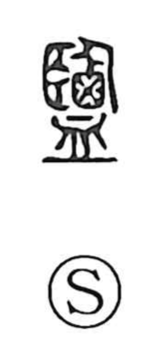

塩

Kun: shio | On: en
salt
Explanation
Originally written as 鹽, this is a picto-phonetic character: the element 鹵 depicts salt gathered into a basket-like vessel, while 監 serves as the phonetic indicator, a marker also seen in 監, 覧, 濫, 檻, and 艦. Because large quantities of salt were once collected at the famed “Salt Pool” (鹽池) in Hedong (present-day Shanxi), the inclusion of 監 may also preserve an echo of that provenance within the graph itself.